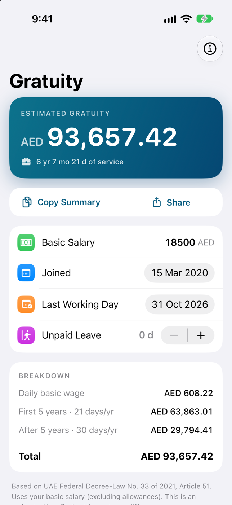
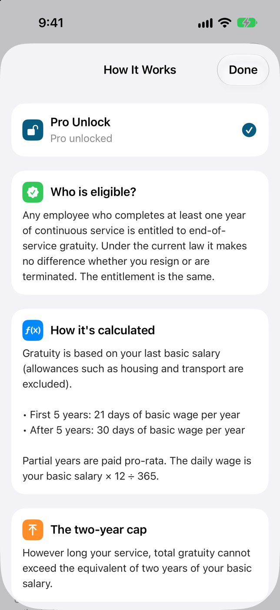
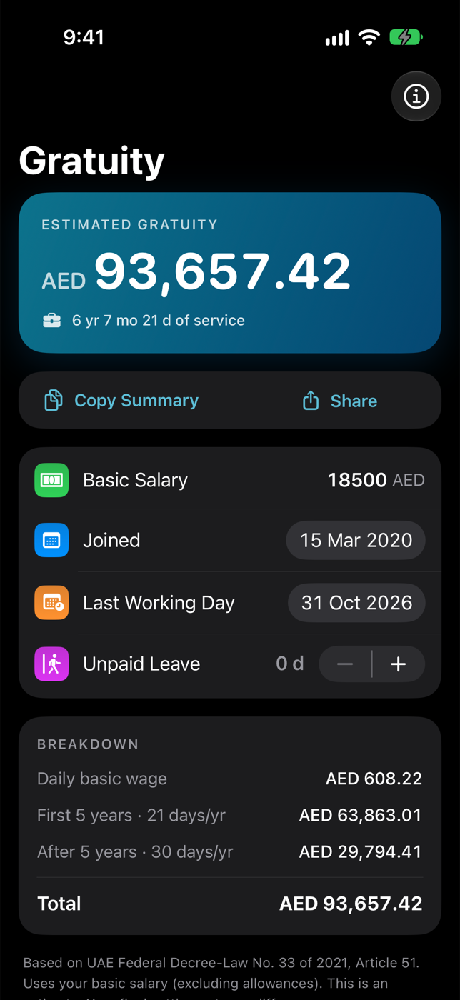
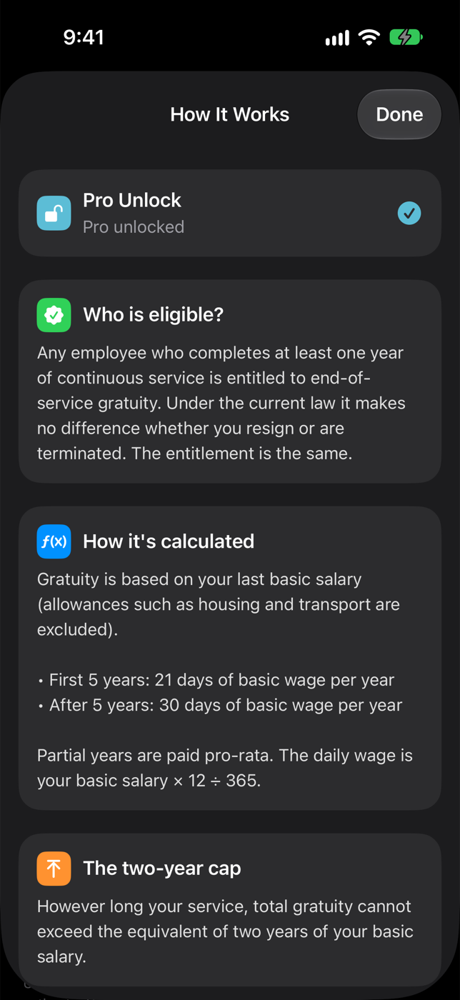

Dubai Gratuity Calculator
End of service gratuity under UAE Decree-Law 33 of 2021 · App Store · updated 17 October 2026
What is new
Refreshed App Store listing with new screenshots and rewritten text, built with Xcode 27.1, on top of the iPhone Duo tabletop and book layouts added earlier. The calculator takes a start date, a last working day, a basic monthly salary in AED and unpaid leave days, and shows the estimate with the 21-day tier for the first five years and the 30-day tier after. A How It Works screen explains eligibility, the two-year cap and Article 51. Nominations are submitted for 28 October 2026 to 12 February 2027.
Facts
- Version
- 2.3.1 (build 2026101402 (live); 2.4 is waiting for review), built with Xcode 27.1
- Platforms
- iPhone, iPad, iPhone Duo, Mac (Mac version 1.1)
- Languages
- English (US, UK, Australia, Canada), Spanish, Spanish (Mexico)
- Privacy
- Salary and dates are entered in the app and used for the calculation on the device.
- Accessibility
- VoiceOver labels on the info, copy and share buttons; Reduce Motion respected on iPhone Duo layouts. Dynamic Type not audited.
- Window
- Windows run between 28 October 2026 and 12 February 2027 across the submitted nominations.
- Developer
- Hemal Modi
Screens
Device captures of the screens described in the nomination. No marketing frames.



